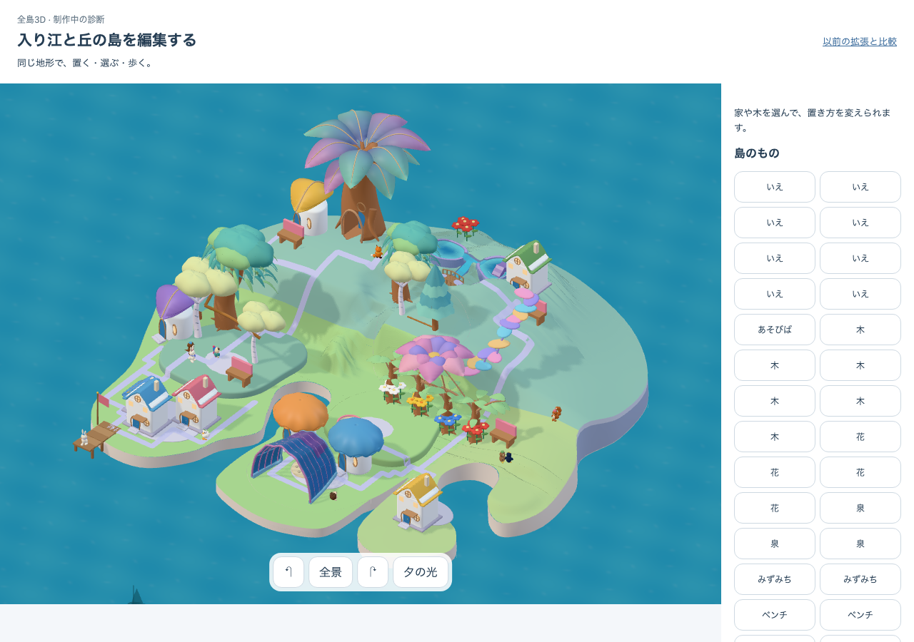
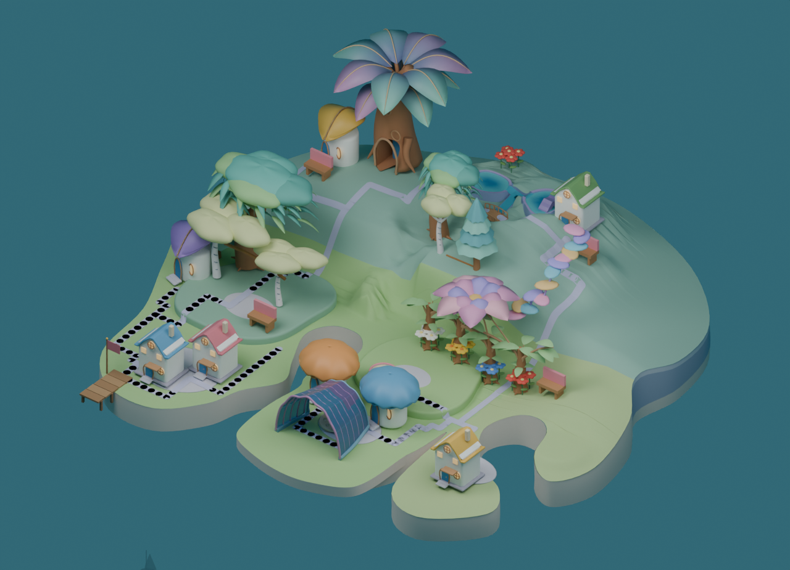
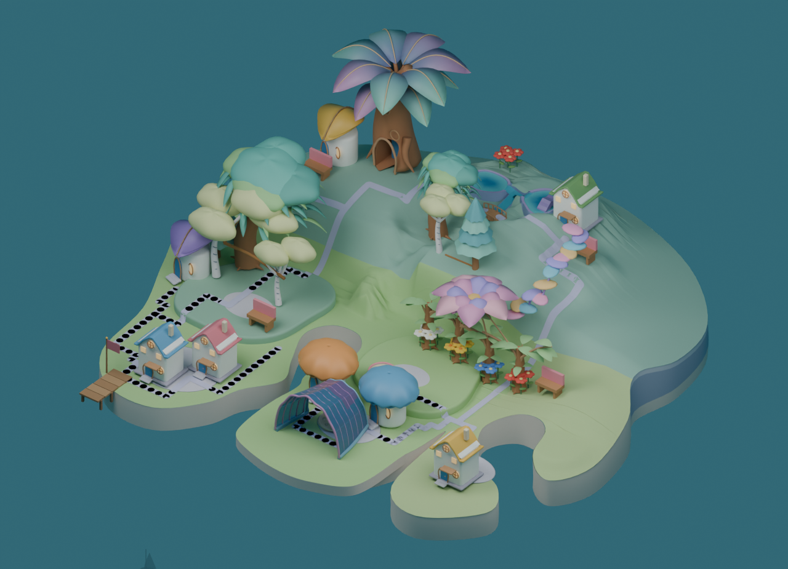

森林冠stage2：量と層は増えたが、囲う森は未成立
作者の構図判定はHOLD。左冠の上下差と葉量は増えたが、大きな葉塊が並ぶ印象が強く、家の背後を包む奥行きと明るい入口には届いていない。次は同じ元幹を起点に、庭の奥と左右を囲い、前を開けた浅いU字を設計する。
接合の数値判定で止まったsceneを、全geometryと材質を変えず描画した診断画像。初回はworld nodeの日本語名「背景」を英語名で取得できず停止した。Background型で取得する複製helperに変更し、camera・光の値は保った。黒い道の点、Blenderの光・海・透過、住人なしはsource固有の差として残す。美術HOLD／独立理解・安全N=0。実接合・actor余白・runtime接続は未確認。

採用native-05原本
Source benchmark。所有数・lighting・cropは診断と異なる。

現在のc2本体
Actual DEV app / authored-shoulder-c2 / 固定35所有物・8軒。

前段b1
Source・HOLD。旧c1 context、同じ4所有幹。

層を変えたstage2
FAILED/HOLD shape診断。保存された失敗時の形を、補修せず描画。

道の影を本体に揃えたstage2
同じ形・材質・camera。growing-reachable-pathsのshadowだけをfalseにした原因診断。繰り返す黒い点の大部分が消えた。美術HOLDは変わらない。
Raw evidence